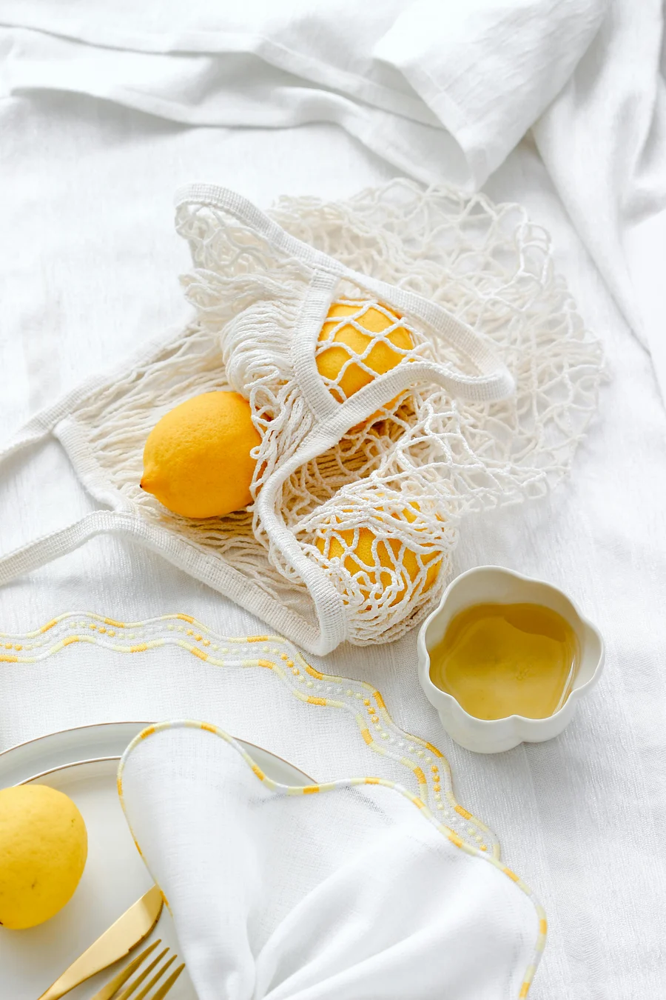
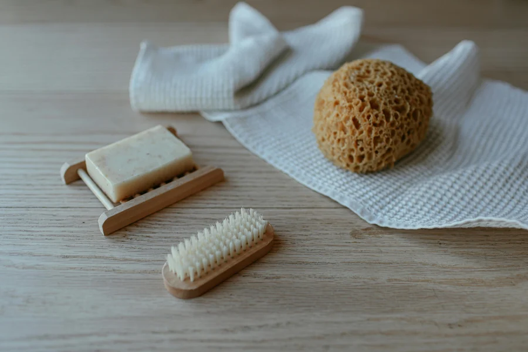
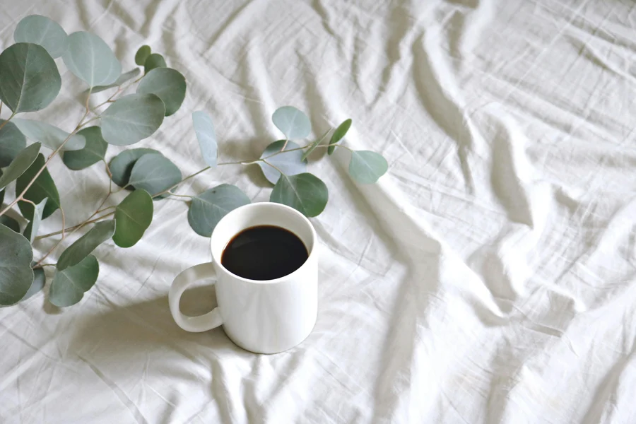

Clover & Thread: Style, Without the Guilt Trip
A brand system and shopping experience for a sustainable womenswear label, rebuilt around real analytics, not just a new coat of paint.
The Problem
Clover & Thread's site was losing customers before they ever reached checkout. A 63% bounce rate, 81% cart abandonment, and a 1.3% conversion rate pointed to the same root cause: a brand and a shopping experience that no longer matched the modern, minimal, ethical-fashion identity the company had grown into.
The Approach
Started with brand strategy before touching a single screen: a brand definition document, a clear positioning statement, and a visual direction of earth tones and warm neutrals, aligned against aspirational peers like Everlane, Reformation, and Cuyana. From there, every shop, product, and checkout screen was built from the same token set, not styled separately after the fact.
The Solution
A refreshed logo system, a mobile-first shopping experience (72% of traffic was already mobile), a simplified product grid and detail page, and a streamlined cart, built to raise conversion above 4% and cut cart abandonment below 40%.
Starting From the Data
The redesign brief began with an honest look at what wasn't working.
Brand Foundations
Clover & Thread is a promise of calm, intentional living, rooted in sustainability, designed for mindful modernity. The voice stays warm, simple, and sincere: no jargon, no invented stats, no exclamation points doing the work a plain sentence should.
Logo Accent Proportions
The peach accent beneath the sage knot started larger, competing with the mark itself. Scaling it down to a single quiet leaf-drop kept the logo readable at 48px while still giving the two-tone system a moment of warmth.
Accessible Color Roles
Patina and Bisque both fail WCAG at text sizes, so neither is allowed to carry copy. Obsidian on Alabaster or Quartz handles every functional text role (~10.5:1, AAA); the brand colors stay decorative: icons, tags, and backgrounds only.
The Shopping Experience
The core of the redesign: a mobile-first shop, a product page that answers the sustainability question before it's asked, and a cart that doesn't lose people at the last step.
Component Library
Small radii, hairline borders, warm-tinted shadows used sparingly: the same rules apply whether it's a button or a checkout button.
Materials & Craft
Honest textures, natural light, earthy neutrals: the photography direction that carries through the shop, the packaging, and the marketing.



Supporting Applications
The same system extends into packaging and marketing, built from the same tokens, not a separate visual language.
Deliverables
A brand system built to hold up under real product decisions, not just a marketing deck.
- Brand Definition Document: purpose, values, voice, and positioning
- Refreshed logo system with accessible color-role guidelines
- Reusable component library: buttons, tags, inputs, product cards
- Mobile-first shop grid, product detail page, and cart flow
- Packaging and social templates extended from the same tokens
- Success benchmarks: conversion >4%, cart abandonment <40%, mobile load <3s

Is your brand losing customers before checkout?
Let's find out why, and fix it with a design that matches who you actually are.